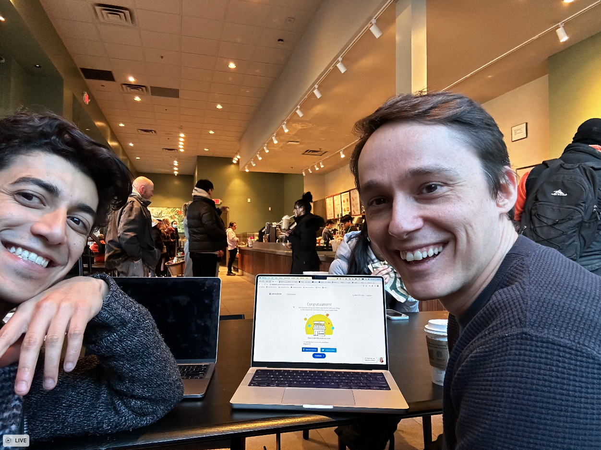

Lessons of a first time founder
Disclaimer: I wrote this for myself. Smarter people will probably tell you different things. Keep that in mind. Take these lessons, and apply them to your journey (or don’t) 🙂
Thanks Predrag, Daniel, Aashay, Darren, and Andy for leaving me comments :)
Lesson 1: Find yourself a Daniel
A year ago, I started a company (Lilac AI) with my long time work partner, Daniel. We had been working closely together for 7 years at Google, and had started two major projects together: TensorFlow.js and Know Your Data. I joke that we’re a cheaper version of Jeff and Sanjay.
In all seriousness, the relationship that I built with Daniel over those years was the best thing that’s ever happened in my career.
I am a hacker, tinkerer, and learn by doing and failing. I have to make mistakes the hard way – reading how people did things the “right way” doesn’t hold as much weight as me trying it out for myself. If you’re at all like me, this story is probably completely useless – go learn the mistakes on your own. For the rest, keep reading.
Daniel is a much more methodical thinker who will go read all of the docs before writing a line of code. He got his masters in computer science at the MIT media lab, and wrote some interesting physics papers. Plainly, he’s a brilliant guy.
We met at the PAIR team at Google. We quickly realized that we worked really well together. We didn’t know why, but it just worked. We started TensorFlow.js as a hackathon project, and it exploded in popularity, we grew a team, and eventually handed it off. Soon after, we started Know Your Data, another 3 year project that went well.
We realized that we had something really special – we could build awesome products, grow a team, grow a user-base, and successfully hand off the projects. I didn’t know much about startups, but that felt like startup material to me. So we decided to jump ship and start a company!
 A selfie of the day we set up Lilac on Legal Zoom. We were naive about the year to come!
NOTE: I know there’s currently debate about co-founders versus solo founders. This is just what worked for us.
Lesson 2: The timing never feels perfect
When we left Google, we had everything going for us. We probably could have been promoted, we had a small team and a great salary. The folks we surrounded ourselves with were some of my best friends. I was at Google for 10 years, and never had another job as an adult. It was foreign to think about something else.
It never felt perfect, but we both managed to get each other over the scary hump and embark on the next chapter of our lives. After a few pump-up conversations, we put in our notice, and left.
Alright… pitching to VCs. That’s what you’re supposed to do now.
We started pitching to investors who had reached out to us over the years. I didn’t know anything about investment or startups, so we just spoke to random people, with not much of a filter. We pitched, we got lukewarm responses. Rinse and repeat. Overall, our experience was positive: they were very kind and helpful and they introduced us to more VCs. We took every call.
Remember:
- The timing will never feel right
- Sometimes, you have to take a leap of faith. Trust yourself. If you have a partner, trust them.
- There will be bumps. Embrace them.
Lesson 3: Don't overvalue VC opinions. Yours matters most.
We kept talking to investors, and each time we would take their feedback, and incorporate it into the next pitch. Then we’d meet a new investor, with new opinions, and rotate on their advice.
This turned out to be a huge mistake. Our pitch was all over the place. We had many pitch decks that were quite different – it just felt like we weren’t making progress.
So we decided to step back and be more opinionated. This turned out to be really important. You don’t want to compromise with VCs: you should try to polarize them. They either get it or they don’t. If they are somewhere in the middle, you will have 10 meetings with the same person, and you’ll never get an answer. At the time no’s felt disheartening – in hindsight, we learned more from the “no” than the “yes”.
VCs are happy to chat with you forever. That’s their job. They’re constantly information gathering, and building relationships. You have to value your time – there are an infinite amount of VCs that you can go talk to.
Conclusion:
- You want to get a “no” as fast as you can.
- Don’t keep changing your mind because of one opinion.
- Stay true to yourself, your vision, your mission.
- A “maybe” is worse than a “no”. A “maybe” wastes more time.
Lesson 4: VCs are not your managers
At Google, if we had a half-baked idea, we could go to our managers and they would help us brainstorm the other half. We thought VCs would do that too.
That is far from reality.
They want you to have thought through all the details of what you’re building, and defend yourself on their questions. You are not brainstorming with them.
It’s important to get this right. But how do you do that?
Lesson 5: Pitch. A lot. Questions will converge.
To get to this point where we’ve crystallized something, we had to pitch 100 times. Over and over. To the point where all the questions start to converge and you have a reasonable answer.
I don’t think VCs care about the answer as much as they care about you having thought about it. To get to this point, you have to just pitch. A lot. The questions will converge.
Importantly, they might start asking you questions about the business side. You may be like me, and never have thought through that before. This is going to be the challenging part, but at this point you should at least think through who your target user / customer is. My personal opinion is that the other things, like “TAM” are kind of B.S. It’s impossible to really understand.
In conclusion:
- Talk to a lot of VCs
- Questions will converge
- At this stage, think through the business side, a little. How will you get paid customers? How will you keep them around?
Lesson 6: Know the next two milestones
At each phase of raising money, you need to know the next two milestones.
If you are raising a pre-seed, you need to understand the pre-seed milestone requirements, and the seed milestone requirements. The mileage may differ based on your project, but here’s what they were for us.
Pre-seed:
- Have a great team
- Have a good idea, and the team should be able to build it
- The more you’ve fleshed the idea out the better. Code is great, demos are great, prototypes are great. If you’ve already released something with users, even better.
That’s it. They know you’re going to pivot. All startups do. There might be huge pivots, or mini-pivots. Pivots are a fractal. They just want to be able to trust you’ll be able to navigate those waters.
Seed (mileage may vary):
- A healthy user base and/or a handful of users that could convert to paid customers. This is tricky, because I didn’t know this at the pre-seed round. For example: if you have 5k github stars, you may be alright (don’t take my word for this). If you’re like us, with 600 github stars, you’re going to need a few mature user relationships that are ready to start paying, and are representative of the market you are going after. If you have 3 users, and they are the only users in the world that will pay, this isn’t a good sign. You need to really think this through.
- You may be wondering “why didn’t you go get more github stars”. I think this is a function of something out of control: how “popular” something is is not the same as whether it can be converted to a business. Even though we had 600 stars, we still had some serious enterprise users. Some projects have 20k stars, but have no path to monetization.
- This is going to be a function of interest rates! When interest rates are high, investors invest less. When they’re low, money flows more. Read these two blog posts for more details.
This isn’t complicated. But don’t start raising until you’ve thought it through.
Now, why do you need to know the seed round milestones right now?
Because the goal of the pre-seed money is to get you to the next milestone. This is critical. They will ask you “why do you need this much money” and “why this valuation” and you may be thinking “I have no idea” (that was me).
The way you should be thinking about this is you need enough capital to get to the seed round, but not too much capital because you’re diluting your team. When you give out 10% of your company, that’s 10% less for you, your hires, etc (I’m not being precise here, purposefully). This is a gentle dance, and is partially guess-work. Don’t worry if you haven’t worked it out exactly, just think about it.
Things to think about:
- Are you going to hire engineers? Is it just you?
- Do you need capital for other things, e.g. compute?
Lesson 7: Valuations are not important. Unless they’re too high.
The other piece of this is about valuation. Valuation is determined simply by looking at the equity you’ve sold (e.g. 10%) and the money you’ve raised from it (e.g. 100K) and dividing them (e.g. 100K/10% = 1M). Yes, this is overly simplified.
Do valuations matter? It may feel like you should get a really high valuation because it looks and feels good. In practice, this is a bad way to think about it.
In this equation, there are three numbers:
- The equity you’ve given out
- The capital you’ve raised
- The valuation, as a function of equity and capital
At face value, you want to minimize the equity you’ve given out, and maximize the capital you’ve raised so you have cash to get to the next milestone.
However, if your valuation is too high, you might have a more difficult time raising the next round. If a pre-seed company has a valuation of let’s say, 15M, you’re going to need some larger multiple of that for the seed round. This could be much harder, as the milestones for that may be more difficult (more customers, more paying folks, etc).
So you want to be careful not to raise in a way that results in an unhealthy valuation as it may bite you later when you are raising at the next stage (people think in multiples of the previous valuation).
Lesson 8: Get a lawyer
Before we get into the funding, it’s important that you get a lawyer. We used Cooley, one of the defacto tech startup firms. At early stages, they’re not trying to rob you of all your money.
It’s important to do this now because we actually didn’t do our original documents correctly. They fixed all of this for us, and educated us on some of the intricacies that I won’t go into.
Lesson 9: Choose the right VC. Do your homework.
We eventually got a term-sheet from Haystack for 400K, owning 5% of the company. Haystack is a really excellent early-stage investment firm, who have some huge successes like Doordash, Instacart, and Figma. I can’t speak more highly of Semil and Aashay.
When we finally got a “yes”, Semil said something like: “You guys are good. You’re in the right jetstream. We’ll invest.”
I joke that they didn’t actually listen to our pitch.
Very important:
- Read through portfolio companies of prospective VCs
- Talk to their portfolio companies
- Understand the space they invest in
Lesson 10: Know what a SAFE is
So we signed a SAFE with Haystack, they wired us the money, and we were on our way.
What the heck is a SAFE anyways? A SAFE is a “Simple Agreement for Future Equity”.
At this point, you may think they actually own 5% of the company. This is sort of true.
In reality, a SAFE is effectively a promise that they will get 5% at a priced round. But on paper, Daniel and I still own 45% each (we set aside 10% for new employees).
SAFEs are very normal for this amount of money at this stage. They are really founder-friendly, and allow you to asynchronously raise money. Once the first SAFE is signed, you can go get another SAFE if you want to raise more money and have money wired in days.
Compare this to a priced round, typical for later stages, which are synchronous events. You have to get all the investors, at the same time, to sign the docs, which means they all have to agree on the terms simultaneously. This comes with other strings, we’ll get to that.
At this point, you should really try to understand what a SAFE is. Read this for more details.
Conclusion:
- Understand the mechanics of a SAFE.
- At a pre-seed, SAFEs are very normal, and you can raise capital asynchronously.
Lesson 11: Getting an investment is like a marriage
In this situation, we got lucky because Semil & Aashay are the best partners we could possibly ask for, given how little we understood about the startup space. They gave us time and space to build over the next 6 months, but were very responsive when we had a question about how to think through hiring, or product, or raising the next round.
However, I’ve heard horror stories of bad VCs who are more like bulldogs, and want to push their opinions on you. It’s important to get this right, because they will be on your cap table forever. If you don’t know what a cap table is, you should read this.
There’s an old adage: getting an investment is like entering into a marriage. In reality, you can get a divorce in a marriage. It’s not that easy with investors.
At this point, you might be really excited about a large number in a bank account to build a team, but it’s critical to get the partner right. I cannot emphasize this enough. There is plenty of capital to go around, but good partners are much more rare.
You need to ask yourself: what kind of partner do I want? Do you want someone who’s going to help you with the product? Do you want someone who’s been a founder before? Do you want someone to help with the motion of making an awesome product into a successful business? At this stage, it’s not critical to get these all right, I think it’s much more important to have someone you plainly get along with.
Remember:
- VCs are on your cap table forever
- When pitching, evaluate them as much as they are evaluating you
- Do your homework on them. Ask other portfolio founders for their advice – cold emailing is ok!
- What is their personality like? Do you mesh with them?
Lesson 12: Launch and get customers early
Let’s get into the product now.
Daniel and I spent about 6 months in “stealth” building the product. We were going to release an open-source product, but we felt that it should be a certain level of polish or nobody would take us seriously.
We launched, and things went well, but it grew slower than we thought. You should expect this. It takes time for people to understand what you’re doing, why, and for the grassroots adoption to take hold.
In hindsight, we should have released the product earlier, even if it was not perfect. This would have given us more time to build, but critically we would have built less on intuition, and more based on what customers wanted. After the release, what users asked for was much different than what we intuited to build. A good chunk of what we built was actually useless in practice.
Your clock is ticking – you are burning money on salaries if you are paying yourself / employees. Our burn rate (e.g. the rate at which you spend money) plus the invested capital, meant that we had 1.5 - 2 years. However, we hired someone which we paid market rates, which immediately dropped our runway (e.g. the time you have left, given the capital and your burn rate) to something like 8 months.
Launch and iterate quickly!
Lesson 13: Give your employees equity
In general, when thinking about raising money, you want to leave equity for employees, versus VCs. They bring much more to the table, and can help you build a huge business.
You also want them to feel more invested in the company, versus giving them huge amounts of cash (which you have very little).
This is critical for making a healthy team dynamic.
Lesson 14: Remember the milestones!
I’m going to assume you’re a great product builder and can make awesome software. We can talk about that in a later post. For now, let’s focus on the harder part (for me) – building a company.
By this point in the story (October 2023), we’d gotten some open source traction, there were a few large companies that started to gain interest in what we were doing.
So we decided to go raise a seed round!
This was a mistake (however, in hindsight, this is how I learned my lesson about milestones).
What we should have done, 6 months ago, is read this blog post and taken my advice from above. But taking advice is not in my DNA, even with a time machine. Remember the milestones!
We went to the Bay Area, talked to lots of VCs, and plainly got rejected over and over, despite them “being really excited about what we’re doing”.
Here were the lessons:
- We didn’t have enough large companies using us. When VCs did diligence checks they didn’t yet show signs they would pay. This was an important business lesson.
- At the same time, we only had a ~350 github stars
- We didn’t go look at the other companies that raised a similar round. What did they look like? What was their traction like?
We should have waited for some of those relationships to mature. We took a huge morale hit after the rejections. It wasted a lot of valuable time that we could have spent building product. We seriously were thinking about what the company shutting down would look like.
However, building product gets you to that milestone, but also is just good for momentum and morale.
Lesson 15: Product and customers are what matter most
It took a little bit of time for us to ingest the lessons from the failed fundraise. There were still 2 VCs that didn’t quite say no, but remember a “maybe” is actually a no. They are still happy to waste your time at this stage.
As someone wise once said “Investors can remain ‘interested’ longer than you can remain solvent.”

What did we do? We did the only thing we could do (with 6 months left of runway). Build product!
At the time it wasn’t clear that this was the right decision. Should we keep pitching?
What ended up happening was we had some major product breakthroughs that told the story in a much more clear way. We launched clustering and Lilac Garden and all of a sudden things really felt different. Lilac Garden was going to be a paid service that accelerated common dataset transformations.
We had lots of sign-ups, and we now had a business story. I think this was crucial for the next phase.
Morale was high. Companies were reaching out. We had an influx of new ideas. Everyone was excited (in spite of the ticking clock of our runway). Relationships were maturing, we now had several power-users that were willing to pay when we released a service / on-premise installation.
No matter what, just keep building.
Lesson 17: While you don't want to overbuild, spend ample time exploring
Another section on product, because it's actually so important. And it's easy to forget that product is so important given all the other stuff.
People say to avoid over-building, and focus on a narrow problem. This is of course true.
At the same time, you want to be able to explore lots of different approaches to solving a problem, or attacking adjacent problems. Sometimes, other things pop out of that that could be the feature that gets you to product-market-fit.
Sometimes exploring a new feature opens up an entirely new way of thinking, or a new way of solving a problem. Or it gets you in front a user that you wouldn't have normally been in front of.
I think it's critical that most focus should actually be on product, and not the game of building a company. Everything else follows.
Lesson 16: Between pre-seed and seed, start thinking about the business
When we launched clustering and Lilac Garden, all of a sudden we had a story for how users would convert. We also had a user who wanted us to sell them a managed, on-premise version of the cataloging features we had built.
This was an important piece of the puzzle as it was a major talking point for VCs during our seed round pitches.
At this stage (between pre-seed and seed), I think it’s wise to think about how you’re going to monetize. It’s important to have people ready to convert once you have a paid story.
Lesson 17: Who you know matters A LOT. Grow your network.
We looked at other seed round companies, and it felt like we were ready to try again. I feared the same thing would happen, but we had to at this point. We were running low on cash.
But at this point I felt like I had all the lessons from the failed raise under our belt. We spent much more time with customers, and importantly other founders. They commiserated with us.
At NeurIPS, I chatted with one of the most successful startup founders I know, Cris Valenzuela, founder of Runway. From the outside, it just looked like his company had successful raise after successful raise. Building a huge business at the center of all the attention. A full blown rocket ship where everyone wants a piece.
He gave me the most important motivational speech of my startup career.
He told me that he had plenty of moments of struggling with raising, and didn’t have a founder network at the time. He told me we needed to backchannel with founders – when another successful founder vouches for you, it holds a lot of weight. He told us we need to stay true to the vision, and that it’s a mistake to build a company for VCs. He told me that the story is what matters, VCs are human beings that need to believe in you and your mission.
He was totally right, and we knew it, we just were steeped in the uncertainty that it was hard to be confident about that.
Equipped with all of this product, new way of thinking, and motivation, we gave it another go.
Lesson 18: Have conviction and a strong vision
At this point in the story (Feb 2024), we started reviving conversations with VCs that rejected us, and new VCs. We started getting better at sniffing out the good ones from the bad ones. We knew our target VC: one who could help us navigate the transition from OSS to a company with revenue. We wanted someone who vibed with us (reach out to me if you want referrals).
One important change from last time is that our longer-term vision started to crystalize. We were extremely convicted that data quality is a critical piece of LLM infrastructure, and we were the ones to build it. We had evidence from users that we could reduce the size of datasets dramatically, and not lose performance.
However, before this, we didn’t yet have that evidence (though it’s obvious), and because of that we were softer in our language about this bigger vision.
But VCs love conviction, and they love strong visions. This is because:
- For them to make money, they need one portfolio company to become a unicorn. The economics don’t work out where there’s mild successes. They want huge companies.
- They want to see that you’ll be able to hire people. For good people to join a small startup, you need to sell the vision. You need to be able to convince them to join you, and not OpenAI.
Lesson 19: Use your leverage
This part of the story feels like all the stars finally started aligning.
We packed a week full of pitches to keep the momentum going after the big launch. This was really important! Don’t try to half-ass it. Commit to the fundraise, it’s critical to set aside time. But do it when you feel great, and your momentum is high, and you’re within range of the milestone target.
We pitched to the first investor, and days later we got the first term sheet from E14, an MIT fund. Calvin and Habib from E14 are rockstar VCs who are ex-founders who have gone through this journey. I would recommend them to anyone!
When you get your first term sheet, this is a huge moment of celebration. Congrats! Now you have some leverage – VCs don’t want to miss out on a great opportunity. Other VCs wanting to invest is a great sign for them.
I personally really dislike this. The people who believe in you first are the ones who have guts. They’re the ones who get it. They get you. They get your story. I find myself biasing myself towards them. The others are just following when they smell something is up.
Now, we can tell all the other investors there’s a term sheet. And everyone all of a sudden wants to meet. This is really important. While we’re not trying to “shop around the value”, what you’re trying to do is find the right partner.
Lesson 18: Time kills deals. Strike when the iron is hot.
My girlfriend, who was in sales, always told me “time kills deals”. Stupidly, I was like “this isn’t sales, this is tech!”
Boy was I wrong. This is sales. VCs are finance people. I had no experience in sales! Across the board, I was a much worse negotiator than them. But I learned a few tricks.
The most important one is about timing. Now that we had the first term sheet, we were getting pressure from them to sign. This makes sense. When VCs give you a term sheet, they really want you to sign it. They have metrics about how many term sheets get signed. This tells LPs which firms to invest in. They’re going to pester you. They might use some negotiation tactics that seem a little scary. Stay strong. You got this.
Practically, the way we mitigated this was to set a deadline. We chose 1 week from then and said “we are going to gather all of the term sheets on Friday, and make the decision over the weekend”.
Mini-lesson: don’t choose Friday – make the deadline on a Wednesday. We were on calls all weekend.
What we effectively did was blame a process, that we transparently communicated with everyone, on why it will take time to decide.
This both allows you to set expectations with early term sheets, but also sets an exploding deadline. Now all of a sudden VCs are scrambling to meet with you.
Conclusion:
- Invent deadlines.
- Make sure your deadline is in the middle of the week.
Lesson 20: VCs can make time quickly
At this point, we started looking at how we were treated differently this time versus last time. Previously, VCs would book meetings a week or two out. We just accepted that.
If there’s something critical, they can meet you right that day. Or at night. They will move meetings, and make time for you. They’ll call you at 10PM. They’ll get on a red-eye if they like you. If they’re not doing that, they don’t think it’s mission critical.
Huge respect for the hustle of VCs. I couldn’t live this life.
They know the “time kills deals” lesson from above. Make sure you understand this too.
Lesson 21: Sometimes you have to prioritize yourself
We ended up getting 3 term sheets from great investors. At the same time, we were working with Databricks on a deal we couldn’t refuse, and we decided to join them.
This ended up being the right decision for us personally, given where we are in life. While this was a very quick “acquisition”, and not necessarily what we originally set out for, it made sense for both of our long-term careers.
I’m not going to talk about the details of this in this blog post, but feel free to message me and I’ll share what I can 🙂